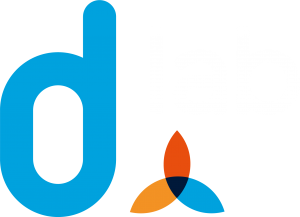
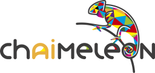

12Nov 2026
Upcoming PhD defence · 16:00
Yousif Ahmed Widaatalla
“Stability, Harmonization, and Clinical Translation of Radiomics: A Multimodal Investigation into Liver, Esophageal, and Skin Cancers”

The Department of Precision Medicine is a disease- and discipline-agnostic department, focusing on “Convergence Sciences”: the integration of medical sciences, technology, and biology both within and beyond the context of oncology.
Data-driven decision support and translational biology working side by side to personalise treatment.

An AI laboratory applying machine learning and deep learning to large-scale medical data for personalised treatment — home to pioneering inventors of Radiomics and multifactorial Decision Support Systems.

A translational research laboratory developing tumour-targeted therapies and advanced disease models to improve diagnosis and treatment while protecting healthy tissue.
Interested in a thesis project in the D-Lab or M-Lab? Please contact us through the contact form.
“Stability, Harmonization, and Clinical Translation of Radiomics: A Multimodal Investigation into Liver, Esophageal, and Skin Cancers”

On 8 October 2026, Wasti Murad joined the D-Lab and will work on the Hanarth Fonds project “Explainable Foundation Model-Driven Prognostic Modeling in High-Grade Serous and Rare Ovarian Cancers for Personalized Treatment”.

On 8 September 2026, Hester van Mourik successfully defended her PhD thesis “Unlocking the lysosome: the role of cathepsins in Hepatocellular Carcinoma”. Congratulations, Dr. van Mourik!
Philippe Lambin and Zohaib Salahuddin (PIs) from the Department of Precision Medicine will prospectively test their prostate AI tool together with Anshu Ankolekar (lead PI) from Maastro. The five-year study across three Dutch hospitals combines AI-assisted prostate MRI assessment with a patient decision aid, aiming for at least 20% fewer unnecessary biopsies in men with an equivocal (PI-RADS 3) MRI, without missing clinically relevant cancers.
New publication alert: “Counterfactuals and uncertainty-based explainable paradigm for the automated detection and segmentation of renal cysts in contrast-enhanced abdominal computed tomography: A multi-center study” has been published in Artificial Intelligence in Medicine (Elsevier).
Mali, Salahuddin et al. built a foundation-model pipeline to detect and classify colorectal liver metastases on contrast-enhanced CT across multiple centres (EuCanImage), reaching an AUC of 0.89 on the internal test set.

Her research, “The dual effect of flavonoids: Novel ways to widen the radiotherapy therapeutic window,” advances cancer treatment strategies and patient outcomes. Congratulations as well to her promotion team: Ludwig Dubois, Guido Haenen and Ming Zhang.

